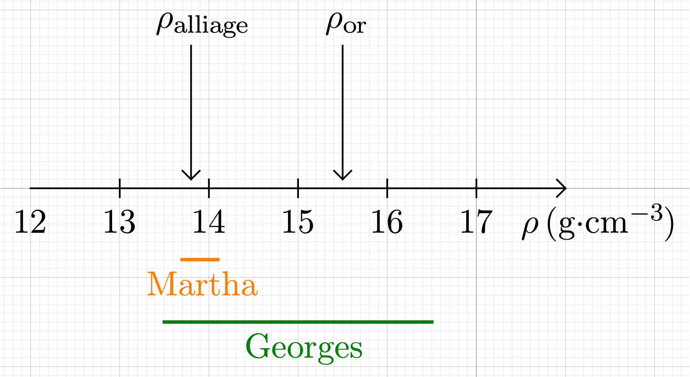

Incertitudes et analyse des erreurs dans les mesures physiques
Chapitre 0,1
La physique est une science naturelle. Les lois qui décrivent et qui
prédisent le comportement des objets doivent être validées par
l’expérience et donc par la publication de résultats de mesures (à partir
desquelles on peut être amené à effectuer des calculs).
Dans ce document on va se poser les questions suivantes, sans répondre
complètement à la seconde :
Quelle valeur a-t-on réellement mesuré ?
Quelle confiance peut-on accorder à cette mesure ?
Erreur ou incertitude
L’erreur de mesure $E_{R}$ d’une certaine grandeur est la différence entre
la valeur mesurée $m$ et la « valeur vraie » $M$.
Si la mesure de la durée de roulement d’une balle sur un plan incliné donne
$m = \pu{56 s}$ tandis que la durée réelle est $M = \pu{54 s}$, alors l’erreur est de 2 s puisque $E_{R} = | m - M |$. Les scientifiques aimeraient pouvoir déterminer l’erreur lors de chaque mesure mais c’est impossible en pratique puisque si on mesure la valeur d’une grandeur c’est parce qu’on ignore sa « valeur vraie ».
La « valeur vraie » d’une mesure est une grandeur inaccessible, l’erreur de
mesure ne peut jamais être déterminée. L’incertitude d’une mesure traduit
les tentatives scientifiques pour estimer l’importance de l’erreur commise.
D’un point de vue scientifique, il aurait donc fallu indiquer que la mesure de
la durée de roulement de la balle sur le plan incliné a donné $m = \pu{(56 \pm 3) s}$ (C’est un exemple !). Un lecteur en aurait donc conclu que
l’incertitude1 vaut $U(m) = \pu{3 s}$ et que la « valeur vraie » se trouve probablement entre $\pu{53 s}$ et $\pu{59 s}$.
L’incertitude permet de définir un intervalle autour de la valeur mesurée. Il existe une certaine probabilité pour que la « valeur vraie » se trouve dans cet intervalle .
Lorsqu’on effectue une mesure on ne détermine pas une valeur mais un
intervalle de valeurs auquel on peut associer une certaine confiance.
Écriture du résultat d’une mesure.
Un menuisier réalise la mesure de l’encadrement d’une porte $L = \pu{210 cm}$, assurément comprise (selon lui) entre 205 et $\pu{215 cm}$.
À quoi est égale l’incertitude de cette mesure ?
Réécrire le résultat de la mesure en faisant intervenir l’incertitude.
Un étudiant mesure la longueur d’une pendule simple. Il rapporte comme
meilleure estimation $\pu{110 mm}$ avec un intervalle probable allant de 108 à $\pu{112 mm}$.
Exprimer ce résultat en faisant intervenir l’incertitude.
Réponse
$U = \frac{| 108 - 112 | \text{mm}}{2} = \pu{2 mm}$. Donc le résultat de
la mesure est $\pu{(110 \pm 2) mm}$.
Écriture du résultat d’une mesure.
Une étudiante donne pour mesure d’un courant électrique $I = \pu{(3,05 \pm 0,03) A}$.
Quel est l’intervalle dans lequel se trouve probablement $I$ ?
Un étudiant analysant le déplacement d’un mobile sur une table à coussin
d’air, mesure à un instant donné sa position, sa vitesse et son
accélération. Les résultats sont présentés dans le tableau suivant :
Variable
Meilleure estimation
Intervalle probable
Position (cm) : $x$
53,3
53,1 et 53,5
Vitesse (cm/s) : $v_{x}$
- 13,5
-14,0 et -13,0
Accélération ($\pu{cm/s2}$) : $a_{x}$
93
90 et 96
Pour chaque variable indiquer l’incertitude de la mesure et réécrire le
résultat en faisant apparaître cette incertitude.
Confronté à un problème semblable à celui résolu par Archimède, on
souhaite déterminer si une couronne est effectivement constituée d’or à 18
carats ou simplement d’un alliage meilleur marché. Suivant Archimède, nous
décidons d’en évaluer la densité $\rho$ sachant que celles de l’or à 18
carats et de l’alliage suspecté sont : $\rho _{\text{or}} = \pu{15,5 g/cm3}$ et $\rho _{\text{alliage}} = \pu{13,8 g/cm3}$. La mesure de la densité de la couronne permettrait de décider
si la couronne est réellement en or par comparaison de $\rho$ avec les
densités $\rho _{\text{or}}$ et $\rho _{\text{alliage}}$. Deux experts de la
mesure de densité sont appelés. Le premier, Georges, procédant à une rapide
mesure de $\rho$, déclare que sa meilleure évaluation est $\pu{15 g/cm3}$ certainement située entre 13,5 et $\pu{16,5 g/cm3}$. Le deuxième, Martha, s’accorde plus de temps avant de déclarer que sa meilleure évaluation est $\pu{13,9 g/cm3}$ comprise dans un intervalle probable allant de 13,7 et $\pu{14,1 g/cm3}$.
Écrire les deux valeurs données par les experts en faisant intervenir
l’incertitude.
L’une des deux valeurs est-elle fausse selon vous ?
L’une des deux valeurs est-elle plus précise que l’autre selon vous ?
Les deux valeurs sont-elles utilisables ?
La couronne est-elle en or ?
Réponse
Pour Georges, $\rho = \pu{(15,0 \pm 1,5) g/cm3}$.
Pour Martha, $\rho = \pu{(13,9 \pm 0,2) g/cm3}$.

Les deux mesures comprennent au moins une des valeurs attendues, on ne peut donc
pas dire qu'elles sont fausses.
La mesure de Martha présente une incertitude bien plus petite que celle de
Georges. Elle est donc plus précise.
La mesure de Georges n’est pas utilisable car elle contient les deux
valeurs $\rho _{\text{or}}$ et $\rho _{\text{alliage}}$. Il est donc
impossible de choisir entre les deux.
La couronne n’est manifestement pas en or.
On appelle incertitude relative le rapport de l’incertitude $U (m)$ sur la
valeur mesurée $m$ :
$$ \frac{U (m)}{m} $$
L’incertitude relative est donc l’incertitude de la mesure $U (m)$ comparée
à la valeur mesurée $m$.
Incertitude relative
La largeur d’une feuille de papier peut être mesurée au demi-millimètre
près à l’aide d’une règle graduée : $L = \pu{(21,00 \pm 0,05) cm}$
Le rayon équatorial de la planète Mars n’est connu qu’à cent mètres
près : $R = \pu{(3396,2 \pm 0,1) km}$.
Laquelle de ces deux mesures est la plus précise ?
Réponse
$\frac{U (L)}{L} = \frac{0 {,} 05}{21 {,} 00} = 2 \cdot 10^{- 3}$ et $\frac{U
(R)}{R} = \frac{0 {,} 1}{3396 {,} 2} = 3 \cdot 10^{- 5}$. Plus l’incertitude
relative est petite, plus précise est la mesure, donc le rayon équatorial de
Mars est mesuré plus précisément que la largeur de la feuille de papier.
La connaissance de l’incertitude permet d’écrire un résultat correctement
On convient généralement d’écrire l’incertitude $U (m)$ d’une mesure à
l’aide d’un seul chiffre significatif (en arrondissant à la valeur
supérieure ).
Les deux résultats de mesure suivants sont-ils différents ?
$$ m_{1} = \pu{(12,82 \pm 0,2) s} \text{ et } m_{2} = \pu{(12,8256 \pm 0,2) s} $$
Quelle serait l’écriture correcte de ces résultats ?
Réponse
L’incertitude de chacune des mesures est $U (m) = \pu{0,2 s}$. Cela
signifie qu’il est probable que la « valeur vraie » soit comprise dans un
intervalle de demi-largeur $\pu{0,2 s}$ autour de la valeur mesurée. La méthode
utilisée pour déterminer l’incertitude n’a pas permis d’être plus précis
(par exemple, $\pu{0,1 s}$ ou $\pu{0,02 s}$). On ne peut pas accorder la moindre confiance à des chiffres indiquant les 1/100 de seconde, les 1/1000. Les deux
résultats sont donc identiques et mal écrits .
$m = \pu{(12,8 \pm 0,2) s}$.
Lorsqu’on écrit le résultat d’une mesure, les derniers chiffres
significatifs utilisés sont ceux qui portent l’incertitude.
Exemple : Si la mesure d’une résistance donne : $r = \pu{100,25 \Omega}$ et que le
calcul de l’incertitude donne : $U (r) = \pu{0,812 \Omega}$, on écrit alors $r
= \pu{(100,3 \pm 0,9) \Omega}$.
Écriture d’un résultat
Écrire les mesures suivantes sous une forme correcte avec le nombre
convenable de chiffres significatifs :
En TP évalué, trois candidats font la même détermination de la
concentration molaire $c$ d’un acide. Ils proposent les valeurs suivantes :
Linh $\pu{(24 \pm 3) mmol/L}$ ;
Sarah $\pu{12 mmol/L}$ ;
Romain $\pu{(19,935 \pm 4) mmol/L}$.
Le correcteur attend la valeur $c = \pu{(20 \pm 2) mmol/L}$. Critiquer le
résultat de chacun des candidats.
Réponse
Linh : Le résultat de la mesure est bien écrit et il semble fidèle puisque
l’incertitude est assez petite (la plus petite des trois). Par contre, on ne
peut pas vraiment considérer ce résultat juste car il ne contient pas la
valeur attendue (Rappel : le résultat d’une mesure est un intervalle).
Sarah : La valeur n’est ni bien écrite ni juste car très éloignée de la
valeur attendue. En fait, on ne peut pas dire grand chose tellement cette
écriture est mauvaise.
Romain : La valeur est mal écrite, Romain aurait du écrire $\pu{(20 \pm 4) mmol/L}$. Par contre elle est juste puisqu’elle englobe la valeur attendue (l’intervalle attendu pour être plus précis). Pour finir, cette mesure n’est pas fidèle car l’incertitude est trop grande.
En résumé
Le résultat d’une mesure n’est pas une valeur mais un intervalle de
valeurs dans lequel on peut considérer, avec une certaine confiance ,
que la « valeur vraie » se trouve .
Un résultat de mesure est juste si l’intervalle définit à l’aide de
la valeur mesurée et de l’incertitude contient la valeur attendue.
Un résultat de mesure est fidèle si l’incertitude n’est pas trop
grande.